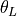
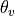
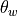
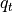
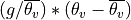

Introduction¶
The purpose of this set of modules is to implement a set of useful utilities for dealing with output from MONC (and similar data).
Variable Names¶
This package uses xarray - returned variables are xarray DataArrays. These have names; this package follows the following naming convention.
Variables or derived variables read from the source or reference file using
get_data()have the name requested (possibly changed from the internal name in the source data by the aliases dictionary). For example,u. They have grid specifications corrected to the appropriate dimension specification in MONC (for example,uwill be onx_u,y_pandz_p) and the time dimension renamedtime.Variables or derived variables read from the source or reference file using
get_and_transform()behave as above but are then interpolated to the requested grid (u,v,worp,or a tuple made up of x, y and z dimension names) usinggrid_conform().Variables or derived variables read from the source or reference file using
get_data_on_grid()behave as above but have the grid name appended to the variable name, e.g.u_on_w. Ifoptions['save_all']is set to'yes', the variable is retrieved from the derived data file if already there and stored to it if not.
Similar functionality has now been added to allow idealised UM data in NetCDF form to be read to look like MONC data, allowing similar derived variable. See datain().
Input Transforms¶
Basic variables ('u', 'v', 'w', 'th', 'p', 'q_vapour', 'q_cloud_liquid_mass', 'q_cloud_ice_mass') are expected to be available in the input file.
If MONC is used, the horizontal grid specification is corrected on input to 'x_p' or 'x_u', 'y_p' or 'y_v' as appropriate.
Similarly, 'z' is changed to 'z_w' and 'zn' is to 'z_p'.
To facilitate use of other models, a list of aliases can be provided under the key ‘aliases’ to translate variable names.
In order to facilitate comparisons and products, tools have been coded (efficiently but not very elegantly) to transform data from different points on the C-grid. Thus, second order terms can be computed correctly on required points just by specifying the ouput grid.
A number of derived variables have been implemented that are calculated provided the required inputs are available. These are provided in the thermodynamics module.
Examples are:
|
Liquid water potential temperature . |
|
Virtual potential temperature . |
|
Wet bulb potential temperature . |
|
Total water . |
|
, where the mean is the domain mean. |
Spatial derivatives can be specified e.g. 'dbydx(th)'.
Multiple (nested) derivatives are allowed, e.g. 'dbydy(dbydx(th))'.
These are read in using get_data() and computed on a native grid, but may be conformed to a requuired grid as per any other variable using get_data_on_grid().
The derivatives are calculated using difference_ops module that now has general, grid-aware derivative and averaging functions.
Todo
Code to calculate the deformation field and hence shear and vorticity has also been implemented but needs full integration.
Version History¶
Latest version is 0.4.0